- 99.97% uptime SLA maintained across full engagement
- 10,000+ users secured across financial and healthcare environments
- 2,000+ user Okta environment administered end-to-end
- 50+ distinct client sites managed concurrently
- Resolved routing failures, DHCP exhaustion, and firewall outages
- Automated DR appliance integrity verification across all sites
- Reduced manual overnight NOC checks significantly
- 85% reduction in call processing time
- 16,170 operational hours saved annually
- 60+ venues standardized on one platform
- 30% reduction in 3 major recurring ticket categories
- 95% first-contact resolution rate on complex blockers
Backbone Cabling from TRs/TE to SIM ER
Structured copper and fiber backbone deployment across a hierarchical star network, built to ANSI/TIA-568 and BICSI standards.
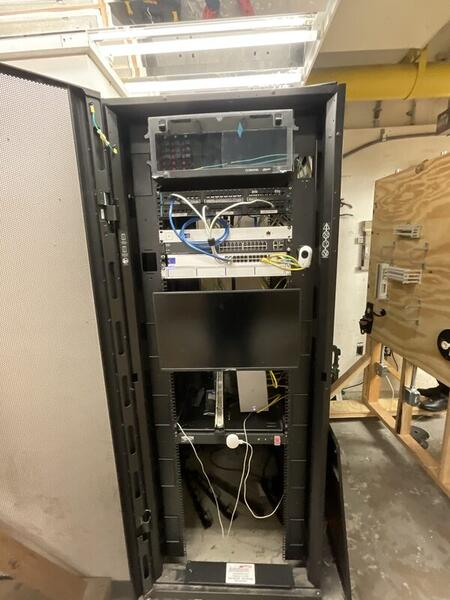
The lab's hierarchical network required a reliable backbone to connect two Telecommunications Rooms (TRs) and a Telecommunications Enclosure (TE) back to the central SIM Equipment Room (SIM ER). All cabling needed to be routed through a conduit cross box for protection, organization, and future serviceability — then installed, terminated, tested, certified, and commissioned to bring the network live.
- Deliver standards-compliant, future-proof cabling infrastructure
- Support high-speed data, voice, and video applications
- Create a scalable, easily maintainable network backbone
- Ensure all work meets ANSI/TIA-568 and BICSI compliance
We ran 6 Cat 6 cables and 2 OM4 multimode fiber cables from each TR and the TE back to the SIM ER, all routed through the central conduit cross box. Cat 6 twisted-pair was terminated using both T568A and T568B configurations, and OM4 fiber was pulled to replace the existing OS1 single-mode runs for higher bandwidth capacity.
All horizontal and backbone cabling was terminated at patch panels for clean cross-connects and simplified future moves/adds/changes. We built a hierarchical star topology by interconnecting individual star topologies — providing excellent scalability, performance, fault isolation, and simplified troubleshooting compared to flat or bus designs.
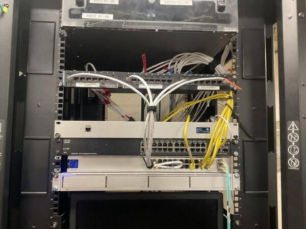
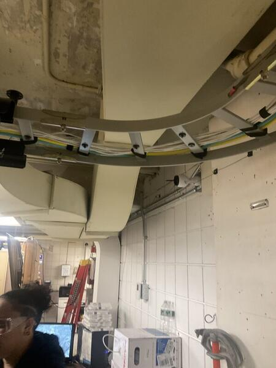
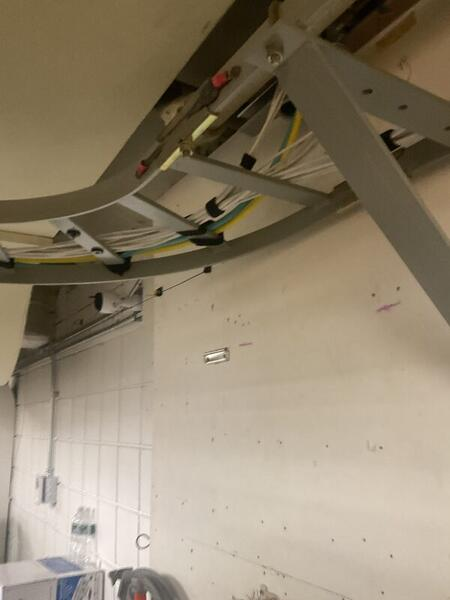
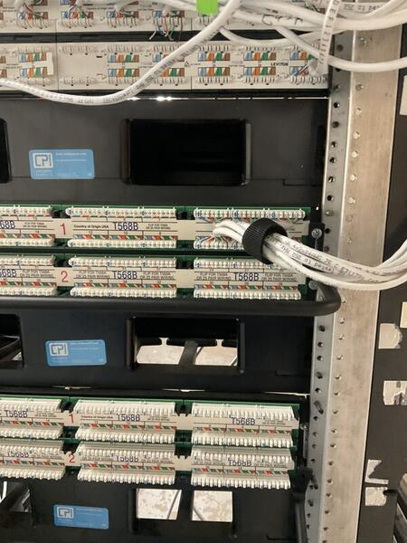
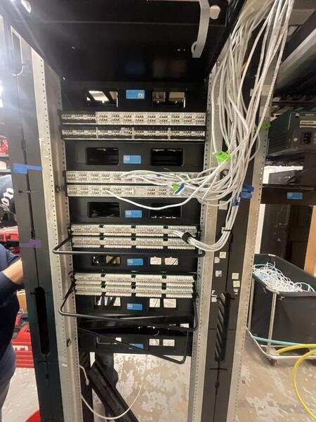
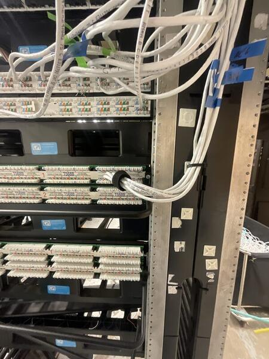
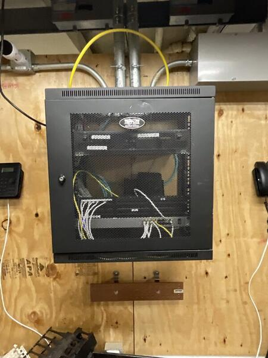
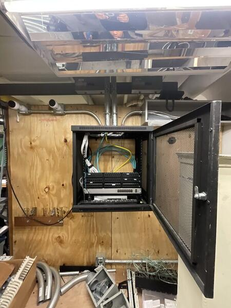
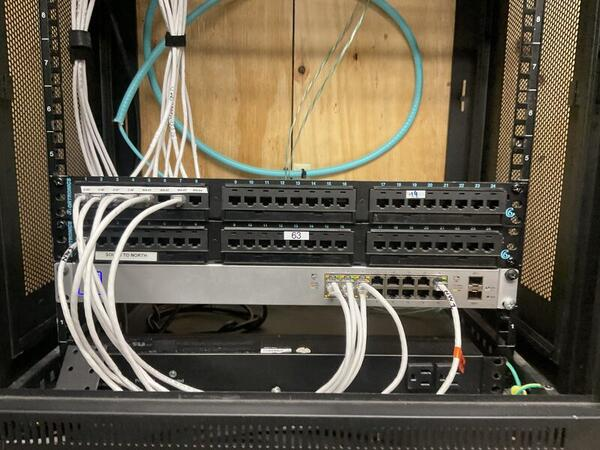
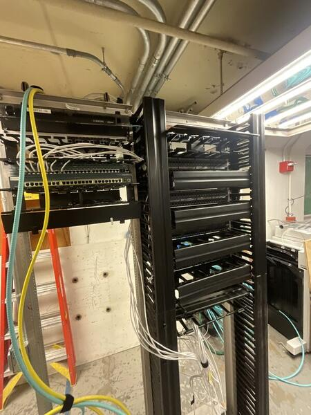
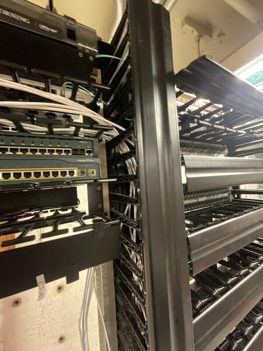
Dell Server No VGA & OS Restoration
No POST, no video output, corrupted OS — diagnosed faulty RAM via systematic isolation, then restored Windows Server through WinRE recovery.
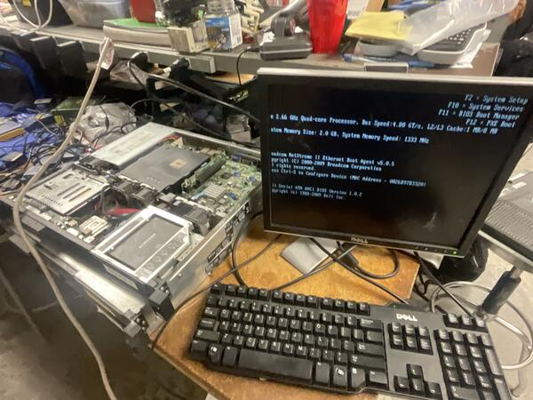
A Dell rack server in the lab failed to display any video output (VGA) on boot. The system was stuck in a boot loop/hang state — no BIOS, no OS, just a black screen. Initial remote checks via IPMI confirmed the server was receiving power but failing to initialize video.
Started with a CMOS battery test to rule out BIOS configuration resets or low-voltage issues — battery was nominal, issue persisted. Next, performed a full reseat of all memory modules. Video output returned intermittently but failed again on subsequent re-seats, pointing to a hardware fault rather than a loose connection.
Systematically removed individual RAM sticks to isolate the defective component. Identified and removed one faulty module — the server immediately POSTed with constant, stable video output, now reporting 2 GB instead of the original 6 GB (lab machine, so the reduced capacity was acceptable).
With hardware resolved, a second problem surfaced: the repeated failed boot attempts from the bad RAM had corrupted the Windows Server OS files, preventing a successful boot even after the hardware fix.
Accessed the Windows Recovery Environment (WinRE) via the pre-boot menu, executed Startup Repair and recovery tools to scan and rebuild the boot configuration data, then restored OS integrity. After restarting, booted into Safe Mode (Network Enabled) first to verify stability, then did a standard restart — server booted straight to the login screen.
- Hardware: Server powers on with stable video output and passes POST
- OS: System boots consistently to the Windows Server login screen
- Network: Server fully operational — login was halted only by the AD lab network configuration (isolated test environment, no Domain Controller reachable), confirming the repair was a complete success
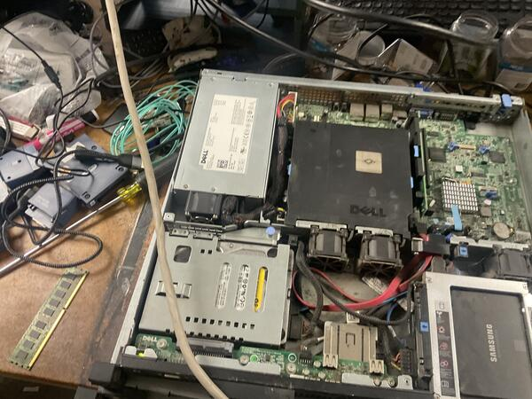
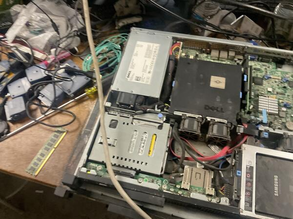
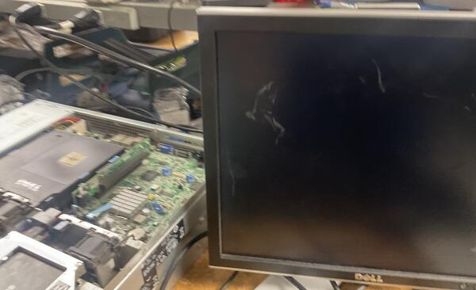
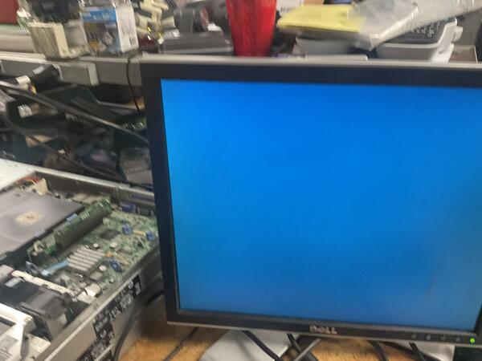
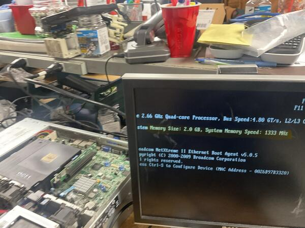
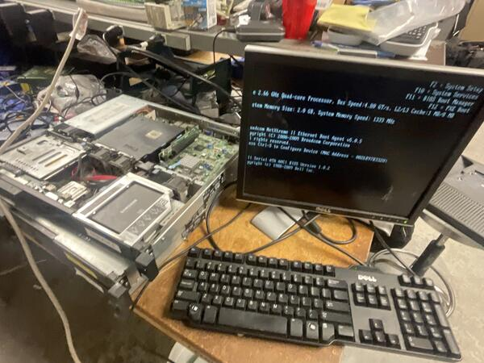
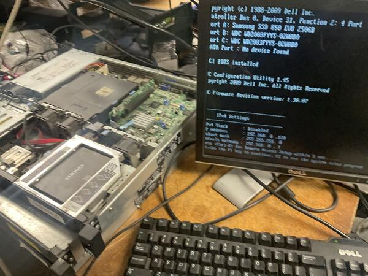
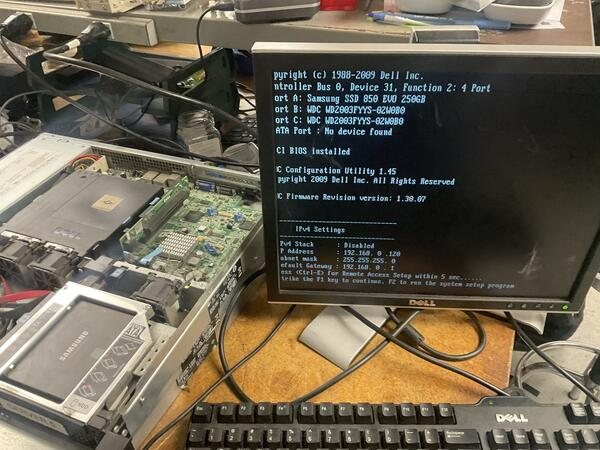
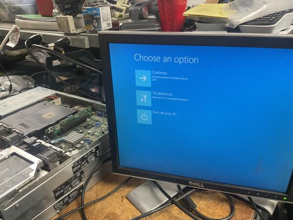
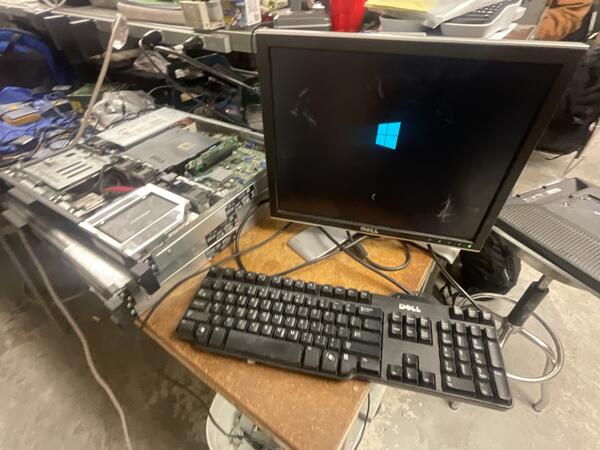
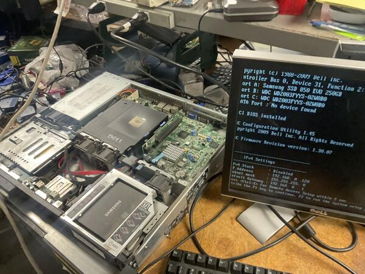
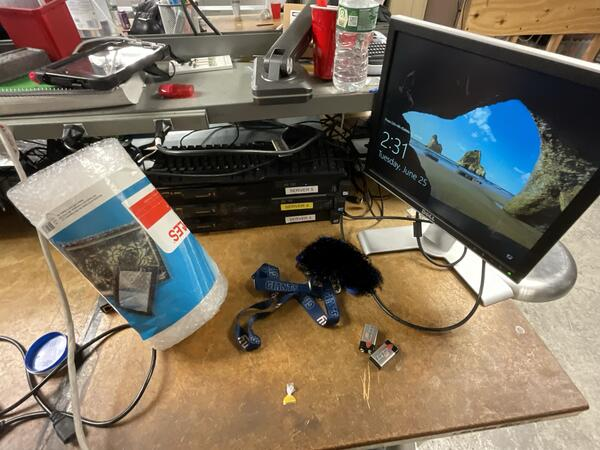
RJ45 Cable Fabrication
Custom Cat 6 Ethernet patch cable — stripped, aligned to T568B, terminated, crimped, and verified pass on all 8 pins.
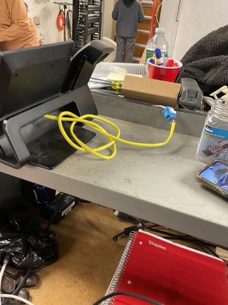
Fabricate a custom-length Cat 6 Ethernet patch cable from bulk cable stock, ensuring full data continuity and proper pin mapping to the T568B wiring standard — the industry standard for commercial structured cabling.
- Produce a working straight-through Cat 6 patch cable
- Follow T568B color code on both ends
- Pass continuity and wiremap testing on all 8 pins with no shorts, opens, or split pairs
Stripped approximately 1.5 inches of outer PVC jacket using a cable jacket stripper, taking care not to nick internal conductors. Untwisted the four pairs (Green, Orange, Blue, Brown), removed the internal spline separator, and arranged all 8 wires in T568B order: White/Orange, Orange, White/Green, Blue, White/Blue, Green, White/Brown, Brown.
Straightened and trimmed conductors flush with electrician's scissors for even insertion depth, then inserted into the RJ45 (8P8C) modular plug — verifying the cable jacket extended past the strain relief tab. Crimped with a Klein Tools ratcheting crimper to drive gold-plated contact pins into conductors and lock the strain relief.
Tested with a Klein Tools Scout Pro 3: connected both ends between the main tester and remote receiver. LCD confirmed "Pass" with mapped indicators 1 through 8 — no shorts, opens, or split pairs detected.
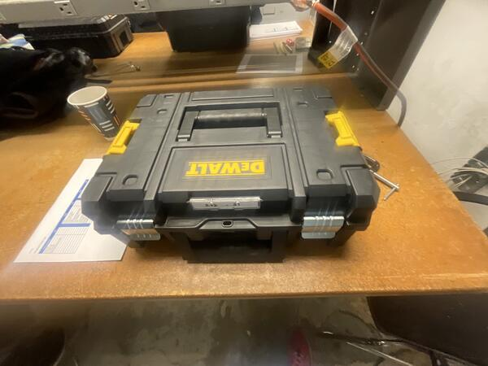
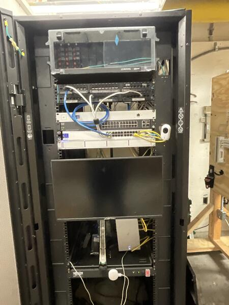
110 & 66 Patch Panel Terminations
Hands-on termination of Cat 5e/Cat 6 cabling on both 110-style wiring blocks and legacy 66-style punch-down blocks for voice and data circuits.
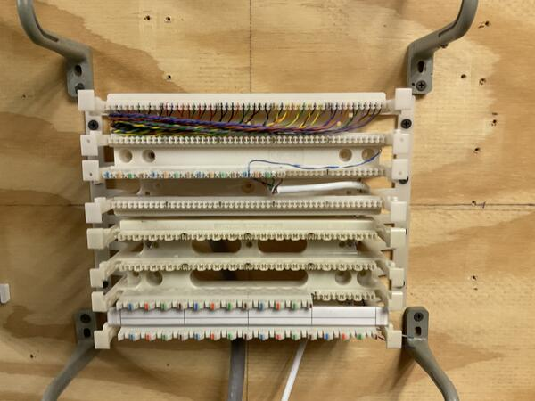
Terminate multi-pair cabling on both modern 110-style wiring blocks (used for structured data cabling) and legacy 66-style punch-down blocks (traditionally used for telephony/voice circuits). Both block types require precise pair mapping, correct color code adherence, and clean terminations using a standard impact punch-down tool.
- Terminate cabling on 110 blocks following the T568B color code
- Terminate cabling on 66 blocks following standard 25-pair color code
- Maintain proper pair mapping with no split pairs or crossed conductors
- Build familiarity with both modern and legacy termination methods
For the 110 block terminations, stripped back the cable jacket, fanned out individual pairs, and seated each conductor into the correct slot on the 110 wiring block following T568B color code. Used a standard impact tool to punch down and trim conductors in a single motion, ensuring solid contact with the IDC (insulation displacement connector) blades.
For the 66 block terminations, followed the same preparation process but terminated onto the legacy 66-style block — seating conductors into the clip-style rows and punching down with the impact tool. This block type is commonly found in older telephony and voice installations. Both block types were mounted on a training wall alongside cable management brackets for organized, real-world practice.
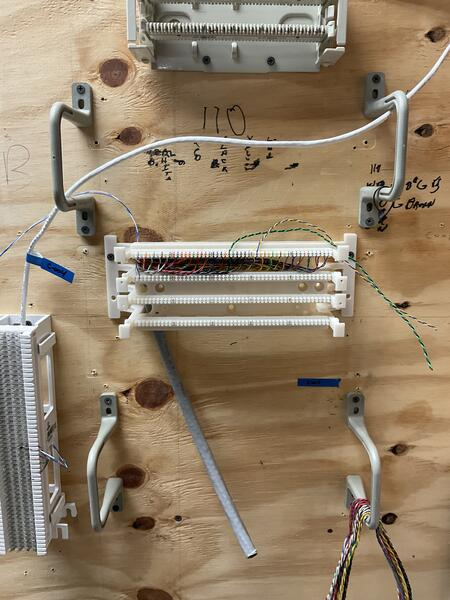
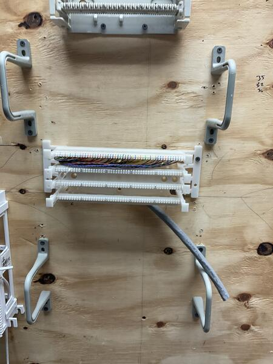
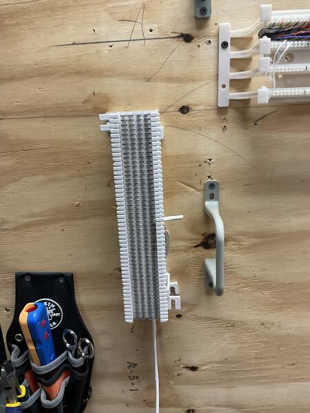
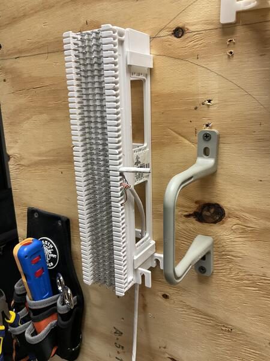
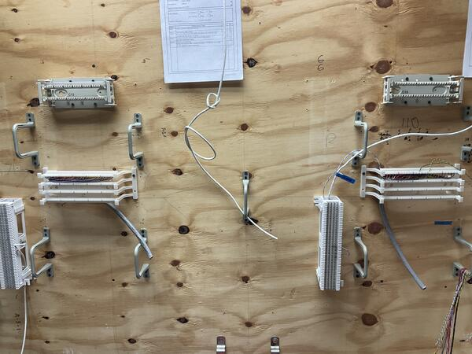
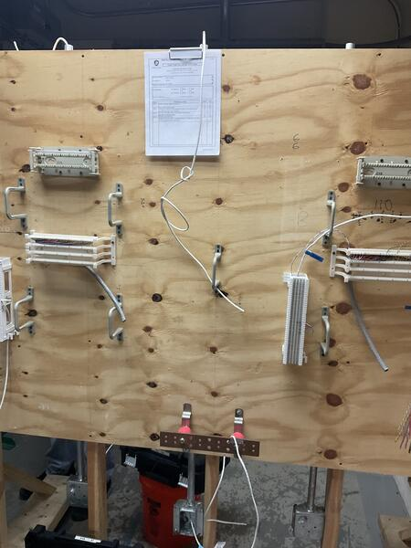